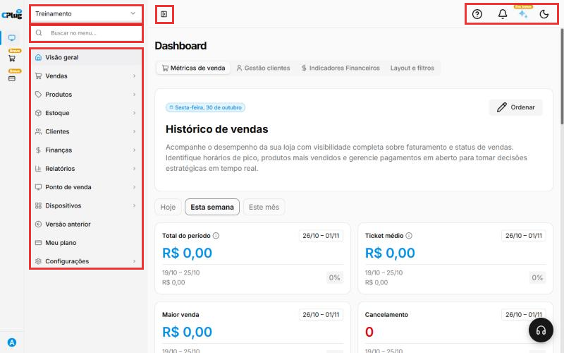
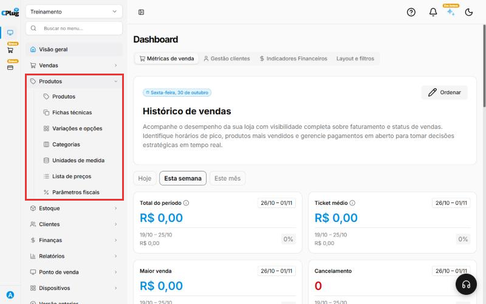
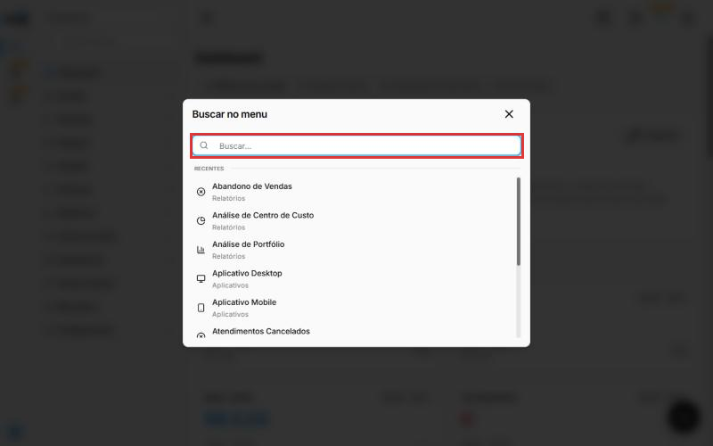
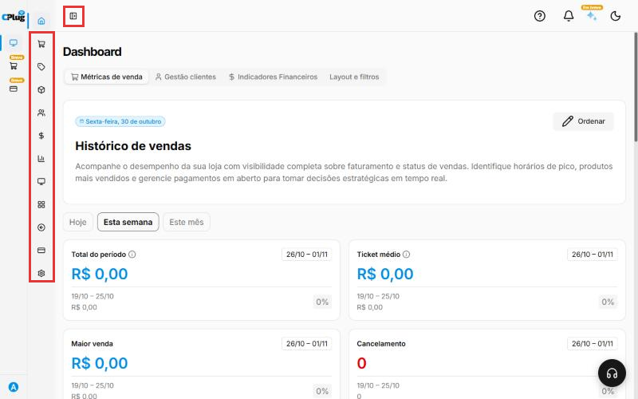
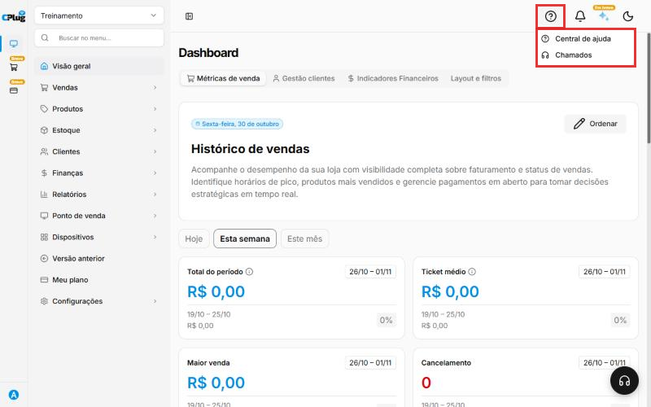
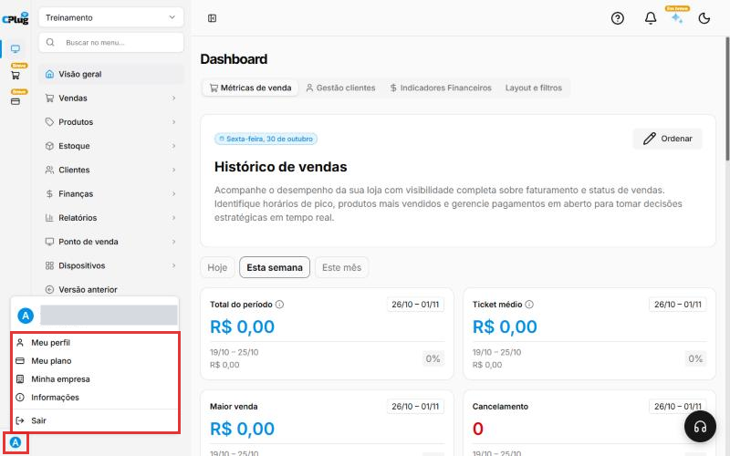
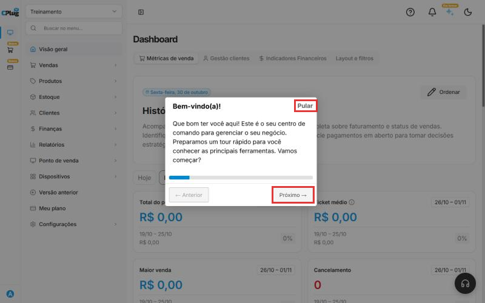

Como usar o menu do sistema
Este manual apresenta as partes da tela da CPlug. Depois de ler, você vai saber chegar em qualquer função do sistema.
Nos prints, o quadrado vermelho mostra a parte da tela explicada em cada passo.
Conheça as partes da tela
Ao entrar no sistema, você vê a tela Dashboard (Visão geral). Os quadrados vermelhos mostram, de cima para baixo e da esquerda para a direita:
- Nome da empresa ou loja: em qual loja você está trabalhando agora. Veja Como trocar de empresa ou loja.
- Buscar no menu: encontra qualquer tela pelo nome.
- Menu: todas as funções do sistema, organizadas por assunto.
- Recolher o menu: o botão ao lado do menu esconde os nomes e deixa só os ícones, para sobrar mais espaço na tela.
- Ícones do topo: ajuda, notificações, assistente e modo escuro.

Abra um grupo do menu
Cada item do menu com uma setinha › é um grupo. Clique nele para ver as telas que estão dentro.
Exemplo: clique em Produtos para ver Produtos, Fichas técnicas, Variações e opções, Categorias, Unidades de medida, Lista de preços e Parâmetros fiscais. Clique de novo para fechar.

O que fica em cada grupo:
| Grupo | O que você encontra |
|---|---|
| Visão geral | O painel com o resumo das vendas. |
| Vendas | Vendas, pedidos de venda, notas fiscais emitidas (NF-e), promoções, ordens de serviço. |
| Produtos | Cadastro de produtos, categorias, variações, fichas técnicas, listas de preços e parâmetros fiscais. |
| Estoque | Saldo do estoque, movimentações, transferências, compras, fornecedores, notas de entrada (XML) e produção. |
| Clientes | Cadastro de clientes, categorias de clientes e campanhas de marketing. |
| Finanças | Contas a pagar e a receber, extratos, contas bancárias, conciliação, plano de contas e contabilidade. |
| Relatórios | Relatórios de vendas, caixa, lucro, estoque, segurança e o relatório dinâmico. |
| Ponto de venda | Pontos de venda, caixas, mesas, comandas, tela da cozinha (KDS) e as configurações do caixa. |
| Dispositivos | Terminais, totens e o download dos aplicativos. |
| Meu plano | O plano contratado da sua empresa. |
| Configurações | Dados da empresa, filiais, usuários, formas de pagamento, impressoras, integrações e a parte Fiscal (certificado, notas e impostos). |
Versão anterior
O item Versão anterior abre o sistema antigo. Use só se o suporte pedir.
Busque uma tela pelo nome
Não sabe em qual grupo está? Clique em Buscar no menu, no topo do menu. Abre uma janela de busca: digite parte do nome da tela (por exemplo, "fornecedor") e clique no resultado.

Recolha o menu para ganhar espaço
Clique no botão ao lado do menu (o quadradinho com uma barra) para recolher o menu. Ficam só os ícones de cada grupo. Clique de novo para voltar ao normal.

Use os ícones do topo
No canto de cima, à direita:
- Ponto de interrogação (Ajuda): abre a Central de ajuda e os Chamados com o suporte.
- Sino (Notificações): avisos do sistema.
- Estrela (Assistente de IA): marcado como "Em breve".
- Lua (Modo escuro): deixa a tela escura, mais confortável à noite. Clique de novo para voltar ao modo claro.

No canto inferior direito fica o botão de atendimento (o fone de ouvido), para falar com o suporte pelo chat.
Acesse o seu perfil e saia do sistema
Clique na bolinha com a sua inicial, no canto de baixo, à esquerda. Aparecem:
- Meu perfil: seus dados de usuário.
- Meu plano: o plano da empresa.
- Minha empresa: os dados do negócio.
- Informações: detalhes do sistema.
- Sair: encerra o acesso. Use sempre que usar um computador compartilhado.

Faça o tour de boas-vindas
Ao entrar, o sistema pode mostrar o Bem-vindo(a)!, um tour rápido que apresenta os menus. Clique em Próximo para seguir, ou em Pular para fechar.

Na faixa da esquerda
Os ícones da faixa fina à esquerda trocam de produto CPlug. O primeiro é o ERP (este sistema). Os outros, Meu Delivery e Pagamentos, estão marcados como "Breve".
Deu algum problema?
Não encontro uma tela que o manual cita
Use o Buscar no menu e digite o nome da tela. Se mesmo assim não aparecer, o seu usuário pode não ter permissão para ela. Fale com o administrador da sua empresa.
Os dados que aparecem são de outra loja
Confira o nome da loja no topo do menu. Veja Como trocar de empresa ou loja.
A tela ficou escura
O modo escuro foi ligado. Clique no ícone do topo, à direita, para voltar ao modo claro.
Relacionados: Como trocar de empresa ou loja
menu tela inicial dashboard visão geral buscar no menu procurar tela recolher menu ícones ajuda central de ajuda chamados notificações modo escuro tema perfil sair logout trocar loja tour bem-vindo versão anterior